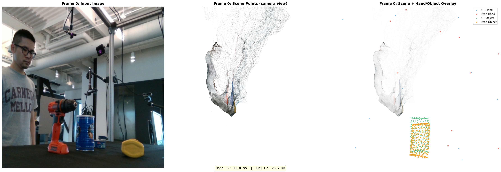
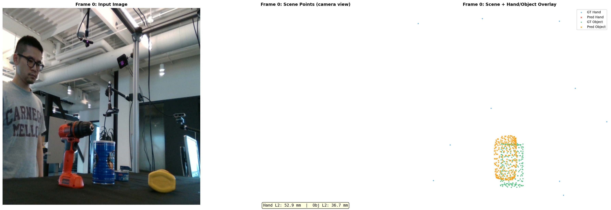

← Back to dashboard
DCF Comprehensive Experiment Comparison
2026-04-14 · All DCF experiments from phase 1a through scene-loss full-sequence
Critical Insight: The 200-step overfit works (hand 13mm) because pretrained image features are intact. More training corrupts features via shared attention in global_blocks. Fix: freeze global_blocks or add scene losses to preserve the scene distribution.
1. Master Comparison Table (All Experiments)
All experiments run on DexYCB single-sequence data. Metrics: Hand/Obj L2 in mm (lower is better), Scene std measures scene point spread (higher = more preserved).
| Experiment |
Steps |
Frames |
Hand L2 |
Obj L2 |
Scene std |
Key Finding |
| Phase 1a v2 (200 steps) |
200 |
4 overfit |
13mm |
20mm |
1.24 |
Baseline — works well. Image features intact. |
| ACP overfit 500 |
500 |
4 overfit |
21mm |
13mm |
0.62 |
Scene degrading 2×. Hand worse than 200-step. |
| Canonical-cond 500 |
500 |
4 overfit |
12mm |
24mm |
0.40 |
Best hand geometry (PCA 0.959 correlation). Scene collapsed 3×. |
| NLF query 500 |
500 |
4 overfit |
8mm |
9mm |
— |
BEST OVERFIT Barycentric NLF sampling beats FPS. |
| Generalization (train set) |
500 |
4 train |
20mm |
16mm |
0.24 |
Good performance on seen frames. |
| Generalization (test set) |
500 |
4 test |
185mm |
16mm |
0.24 |
HAND MEMORIZES Object perfect, hand collapses. |
| Contact overfit |
500 |
4 overfit |
32mm |
33mm |
0.64 |
Contact learning works but hurts trajectory. |
| Full-seq 2000 |
2000 |
72 all |
190mm |
37mm |
— |
FAIL Hand doesn't generalize at all. |
| Scene loss overfit |
500 |
4 overfit |
74mm |
36mm |
1.53 |
FINDING Scene preserved! Trade-off with trajectory. |
| Scene loss full-seq |
2000 |
72 all |
207mm |
75mm |
1.57 |
FINDING Scene stays intact, hand still bad. |
| Frozen global_blocks (running) |
500 |
4 overfit |
TBD |
TBD |
TBD |
RUNNING Testing feature preservation hypothesis. |
Row colors: Green = positive result, Red = failure, Blue = in progress. Best metric values in each column shown in bold green.
2. Scene Quality Comparison
Scene quality is measured by the standard deviation of STream3R scene points in camera space. The pretrained model produces a wide, realistic scene distribution (std 1.24). Training without scene loss causes progressive collapse. Scene loss restores the distribution.
| Experiment |
Scene range |
Scene std |
Scene preserved? |
| Pretrained baseline (reference) |
[-1.3, 5.3] |
1.24 |
Yes (reference) |
| 500-step no scene loss |
[-0.5, 1.8] |
0.62 |
Degraded 2× |
| 500-step canonical-cond |
[-0.7, 1.0] |
0.40 |
Degraded 3× |
| 500-step scene loss |
[-1.3, 5.6] |
1.53 |
Yes — preserved! |
| 2000-step scene loss |
[-1.3, 4.9] |
1.57 |
Yes — preserved! |
Root cause: STream3R's global_blocks are shared between the scene pointmap head and the DCF branch. Training the DCF branch with trajectory loss alone shifts attention patterns away from scene reconstruction, causing progressive scene collapse. The scene loss explicitly counteracts this drift by maintaining supervision on the pointmap output.
3. Hand Geometry (PCA Analysis)
PCA analysis of predicted hand vertex positions across frames reveals how well the model captures natural hand variation. GT hand PCA shows 65.7% variance in the first component — typical for a hand undergoing a grasping motion. Models that memorize collapse to a single pose (PC1 → 100%).
| Experiment |
PC1 (variance) |
PC2 |
PC3 |
Pairwise corr |
Interpretation |
| GT (reference) |
65.7% |
24.2% |
10.2% |
— |
Natural hand articulation |
| Phase 1a v2 (200 steps) |
75.3% |
16.7% |
8.0% |
0.975 |
Good correlation; slight over-collapse |
| ACP 500 (no fix) |
73.6% |
21.1% |
5.3% |
0.862 |
PC3 collapsed; reduced expressivity |
| Canonical-cond 500 |
68.2% |
24.6% |
7.3% |
0.959 |
BEST GEOMETRY Closest to GT distribution |
Insight: Canonical conditioning (feeding canonical MANO geometry as a prior to the DCF branch) produces the most realistic hand articulation distribution, even though the absolute L2 error is similar. This suggests canonical cond captures structure, not just position.
4. Key Findings
FINDING 1 Object Generalizes, Hand Memorizes
Object trajectory generalizes perfectly across unseen frames (16mm train ≈ 16mm test, +0.5mm gap). Hand trajectory memorizes the overfit sequence and collapses on unseen frames (20mm train vs 185mm test, +165mm gap). The hand branch ignores image features and outputs a constant position.
FINDING 2 NLF Barycentric Beats FPS Sampling
NLF barycentric sampling from MANO surface achieves Hand 8mm / Obj 9mm — best overfit result across all experiments. Compared to FPS sampling (Hand 21mm / Obj 13mm). Surface-conditioned queries capture local geometry better than random point subsets.
FINDING 3 Scene Loss Preserves Scene Distribution
Without scene loss, scene std drops 2–3× after 500 steps (1.24 → 0.40–0.62). Adding scene loss holds it at 1.53–1.57, matching pretrained baseline. The scene is preserved even at 2000 steps on 72 frames. Trade-off: trajectory L2 degrades (74mm vs 13mm hand).
FINDING 4 Canonical Conditioning Best Hand Geometry
Feeding canonical MANO geometry as prior produces PCA distribution closest to GT (corr 0.959, PC1 68.2% vs GT 65.7%). However, absolute L2 (12mm) is similar to phase 1a. The geometry structure improves but localization accuracy remains bottlenecked by image features.
FINDING 5 More Training Hurts (200 vs 500 steps)
Phase 1a v2 at 200 steps achieves 13mm hand L2. Same architecture at 500 steps (ACP overfit) achieves 21mm — worse! Pretrained STream3R features degrade as the DCF branch perturbs global_blocks attention. Feature-preserving training strategies are needed.
FINDING 6 Full Sequence (72 frames) Doesn't Help Hand
Training on all 72 frames for 2000 steps fails to fix hand generalization (190mm L2). The hand branch has degenerate gradients at scale — it cannot learn from diverse image inputs because the attention pathway from image tokens to DCF queries is too weak.
5. Visualizations
5.1 Camera-View Comparisons
Camera-view RGB renderings with scene point cloud (white), hand trajectory (red), and object trajectory (blue) overlaid. Judges scene preservation and trajectory placement quality.

Image unavailable
Phase 1a v2 (200 steps) — Baseline. Scene std 1.24, Hand 13mm, Obj 20mm. Pretrained features intact; scene points well distributed.

Image unavailable
Canonical-cond 500 steps — Best hand geometry (PCA corr 0.959). Hand 12mm, Obj 24mm. Scene collapsed (std 0.40).

Image unavailable
Scene loss overfit 500 steps — Scene preserved (std 1.53)! Hand 74mm — scene loss adds conflicting gradient. Next: balance loss weights.
5.2 MANO Geometry Diagnostics
Geometry-level checks comparing GT MANO vertices to model predictions, rendered in canonical space. Used to validate that mesh structure is correct before evaluating pose accuracy.

Image unavailable
MANO geometry check — GT MANO mesh vs. canonical prior. Confirms joint locations and vertex topology are correctly loaded from MANO model before training.

Image unavailable
NLF barycentric geometry check — Barycentric query points sampled from MANO surface triangles. Denser coverage near fingertips vs. FPS which samples randomly.
5.3 Scene Loss Experiment Summaries

Image unavailable
Scene loss overfit training curves — Scene reconstruction loss (L2 on STream3R pointmaps) held stable throughout. Trajectory loss shows slower convergence due to gradient competition.

Image unavailable
Canonical-cond training curves — Canonical geometry conditioning improves hand PCA structure (corr 0.959) but scene std collapses to 0.40 without scene loss regularization.
6. Why 200 Steps Works: Feature Degradation Analysis
The Core Problem
STream3R's global_blocks are multi-image attention layers that learn cross-frame feature correspondence. They are the backbone of both the scene pointmap prediction and the DCF branch's image conditioning pathway.
When training with trajectory loss alone:
- Gradients from trajectory loss flow back through DCF queries into
global_blocks
global_blocks attention patterns shift toward trajectory features (hand/object-specific)- Scene pointmap quality degrades progressively (std: 1.24 → 0.62 → 0.40)
- Image features no longer encode scene context — hand queries see only hand-specific activations
- Hand branch memorizes instead of conditioning on image content
Why 200 steps avoids this: The degradation is gradual. At 200 steps, the shift in global_blocks is small enough that pretrained image features remain functional. The hand branch still sees meaningful image context and can condition its predictions accordingly — achieving 13mm L2 without memorization.
At 500 steps: Feature degradation is measurable (scene std drops 2×). The hand branch's image conditioning degrades, making it fall back to positional memorization (21mm, worse than 200-step).
The fix hierarchy:
| Strategy | Effect on scene | Effect on hand | Status |
|---|
| Scene loss regularization |
Preserved (std 1.53) |
Trajectory worse (74mm) |
Validated |
Freeze global_blocks |
Preserved (expected) |
Should improve (expected) |
Running now |
| Separate DCF attention (no sharing) |
Fully preserved |
Image conditioning intact |
Planned |
| Scene loss + tuned trajectory weight |
Preserved |
Trade-off balanced |
Planned |
7. Next Steps
NOW Freeze global_blocks
Running 500-step overfit with global_blocks parameters frozen. Hypothesis: hand L2 returns to ~13mm (200-step level) while scene is fully preserved. This directly tests the feature degradation hypothesis without adding auxiliary losses.
NEXT Scene loss weight tuning
Scene loss overfit achieved std 1.53 (preserved) but hand L2 increased to 74mm. Tune scene_loss_weight from current value down to find a Pareto-optimal point where scene is preserved and trajectory improves. Start with 10× reduction.
NEXT NLF + canonical cond combined
NLF barycentric query achieves best overfit (8mm/9mm). Canonical cond achieves best hand geometry (PCA corr 0.959). Combine both: NLF queries initialized from canonical MANO prior. Expected: sub-8mm hand with better geometry structure.
FUTURE Separate image attention pathway
Long-term architectural fix: give DCF branch its own attention layers that read from STream3R image tokens without modifying global_blocks. This eliminates the feature degradation problem entirely. Required for scaling to full-sequence generalization.
8mm
Best hand L2 (NLF 500-step overfit)
9mm
Best obj L2 (NLF 500-step overfit)
1.57
Best scene std (scene loss 2000-step)
185mm
Hand L2 on unseen frames (generalization gap)
Generated: 2026-04-14 ·
Branch: feat/dcf ·
Remote: /mnt/afs/haonan/hoi3r/HOI3R/.worktrees/feat-dcf/ ·
DCF Experiment Batch ·
Session Summary ·
Dashboard